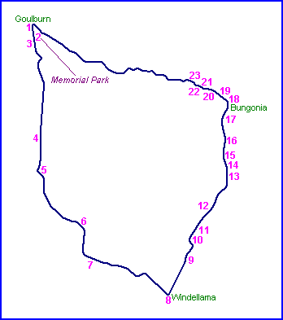
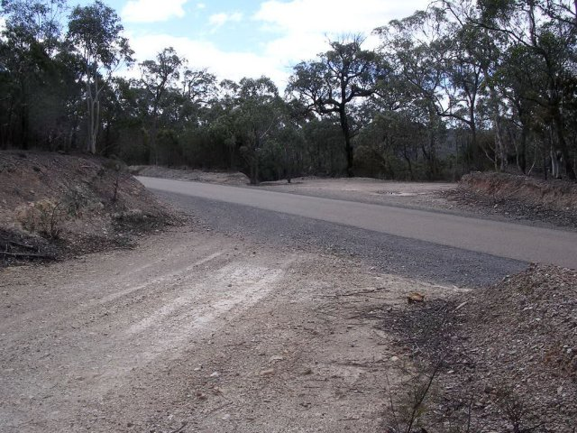
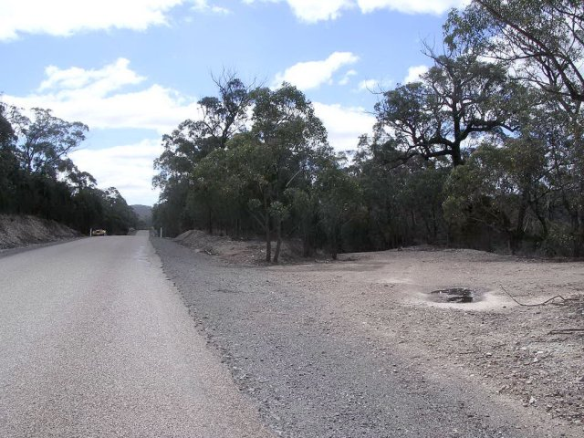
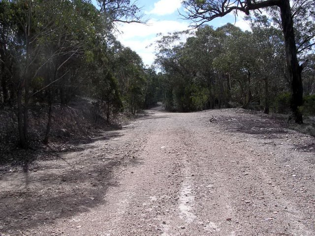
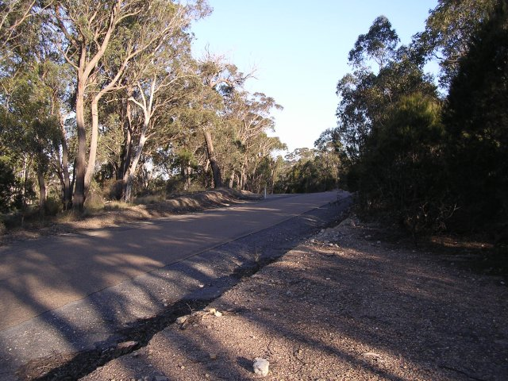
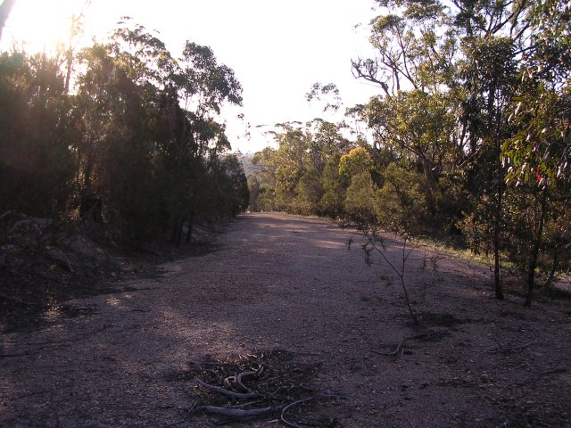
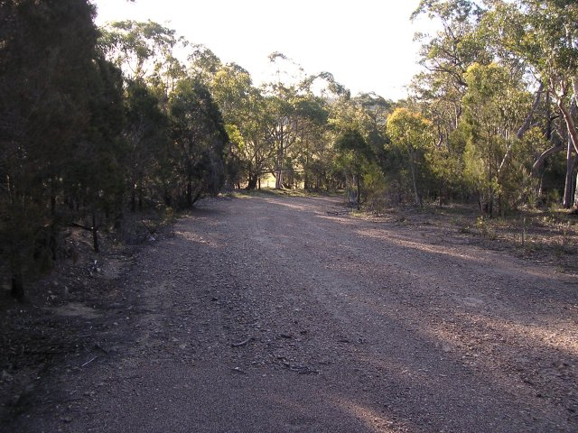
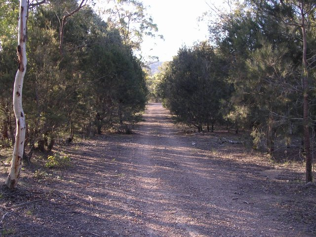
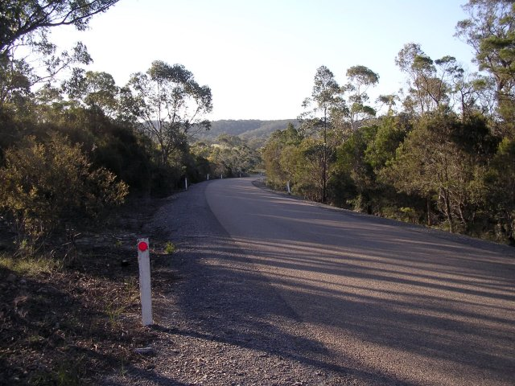

Goulburn-Windellama-Bungonia - Photographs #21 to #25
|| Contents || Photo's 1-7 | Photo's 8-14 | Photo's 15-20 | Photo's 21-25 || Home ||

Numbers on the map represent the location where the photographs were taken. Scroll
down to view the photographs.
Return to racingcircuits.net's Photo Archive Main Index

21A - Old and New Road. (60.0km)

21B - Old and New Road. (60.0km)

21C - Old and New Road. (60.0km)

22A - Old road coming out to the right of the white post. (60.8km)

22B - 180° from previous photo. (60.8km)

23 - Further on old road.

24 - Further on old road.

25 - Present road.
| << PREVIOUS PAGE |
Photographs and Text ©Neil Fackerell. Reproduced here with kind permission.